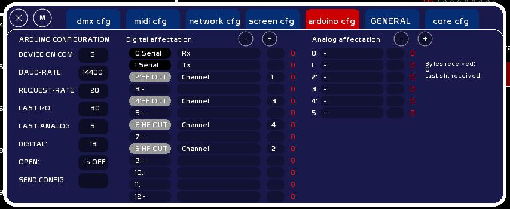
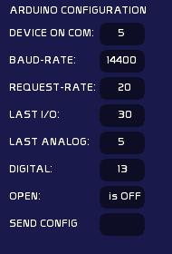
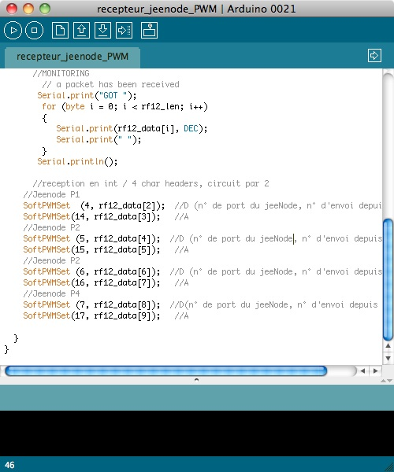

Table des matières
Configuration Arduino
Pour cartes Arduino sous logiciel arduino 0023

Pour cartes JeeNode, LA solution radio

Qu'est ce qu'Arduino ?
Arduino est un micro-ordinateur pour l'expérimentation électronique.
Il possède des entrées et sorties permettant de recevoir et d'émettre:
- des signaux ON/OFF: interrupteurs, contacteurs, Leds, relais…
- des signaux analogiques (potentiomètres, photo-résistances, capteurs de pression, de températures, servo-moteurs, leds graduées ou projos etc…). La réception est analogique, l'émission est en PWM (modulation en largeur d'impulsion).
On peut :
- lui injecter des programmes que l'on fabrique, que l'on nomme des sketches. Ces sketches sont des “scripts” en langage C.
- communiquer avec l'ordi via le port USB
- recevoir des données de sa part
- piloter des installations électroniques et électriques
On peut aussi le laisser tourner en stand-alone, avec sa propre programmation, sans monopoliser une machine.
C'est un projet open-source avec une communauté très active.
Le hardware est très économique et ravira ceux d'entre nous qui rêvent de fabriquer leur propre interface physique, une installation multimédia, ou de redonner jeunesse à une ancienne table en 0-10v. Une carte Arduino coûte dans les 25-30 euros, un jeenode au alentour de 20 euros. Certains proposent un kit découverte avec potentiomètres, servos, résistances, et plaque d'expérimentation sans soudures (breadboard).
Pour les utilisateurs férus et qui codent un peu, des démultiplexeurs permettent de créer facilement plus de sorties PWM: http://www.arduino.cc/playground/Learning/TLC5940 ou en utilisant la libraire SoftPWM.
Comment ça fonctionne ?
Ce micro-ordinateur embarque un système interne avec un bootloader, qui comprend tout ce qu'il faut pour interpréter le sketch que vous allez lui injecter.
Sa vitesse est généralement de 16Mhz. Il s'agit donc d'un tout petit processeur, mais qui permet déjà de gérer pas mal d'instructions.
Pour interfacer avec lui, il faut le programmer, par une IDE ( environnement de développement ) qui permet d'écrire des sketchs.

- Soit on apprend son langage ( basé sur le langage C ), et qui est très simple
- Soit on le charge avec le set fourni dans le dossier ressources/arduino/ de whitecat, pour communiquer avec lui depuis WhiteCat. Ce set permet la réception des données issues d'Arduino, et l'écriture vers les ports en output d'Arduino.
Le site du projet arduino: http://www.arduino.cc
La section française: http://www.arduino.cc/fr/
Le forum en français: http://www.arduino.cc/cgi-bin/yabb2/YaBB.pl?board=francais
Un post regroupant les tutoriaux en français et autres ressources: http://arduino.cc/forum/index.php/topic,67624.0.html
Installer les drivers d'Arduino
Arduino 2009 et précédentes
Si vous avez déjà installé les drivers VCOM de la Enttec PRO, vous n'avez pas besoin d'installer les drivers Arduino. La communication se fait en effet par un chipset FTDI, qui simule un port série. C'est la même technologie de communication présente dans les cartes dmx ENTTEC. Sinon, installez les drivers comme spécifié ici :http://arduino.cc/fr/Main/DebuterInstallation. Il est d'ailleurs possible de fabriquer une entec opendmx avec une duemilanove.
Arduino UNO
Dans le logiciel Arduino que vous téléchargez, il y a un dossier drivers. Pour installer le driver:
- branchez votre interface
- click droit sur l'icone Ordinateur de votre bureau
- Propriétés > gestionnaire de périphériques
- clickez l'UNO qui s'affiche avec un panneau “attention!”
- faites une recherche de drivers manuels
- allez dans le dossier dézippé du logiciel arduino/ drivers
- lancez l'installation
Jeenode
Il faut faire attention aux versions de Jeenodes utilisées.
Les Jeenodes V5 et jeelink v2 utilisent le driver FTDI (duemilanove Atmega328).
Les Jeenodes v6 et jeelink v3 sont sur base driver UNO (sélectionner carte UNO).
Charger le sketch de communication avec WhiteCat
Attention, si votre interface Enttec est branchée, elle sera elle aussi considérée comme une carte Arduino par l'IDE de programmation. Il est donc recommandé de débrancher votre carte DMX lors du chargement de sketches dans la carte Arduino.
- Brancher la carte Arduino en USB
- Installer l'IDE d'Arduino 023: (lien pour télécharger les différentes versions https://code.google.com/p/arduino/downloads/list )
- Télécharger Arduino et le dézipper à l'endroit de votre choix
- Copier coller simplement le contenu du dossier whitecat/ressources/arduino/librarie 023 dans le dossier libraries de votre arduino 023.
Ce sont les librairies additionnelles nécessaires à l'éxécution du sketch pour WhiteCat. Sous UNO et logiciel arduino 0022 et supérieur vous n'avez plus besoin d'installer Wstring.
- Sélectionner dans votre IDE la bonne carte et le bon port COM:
- Ouvrir l'IDE ARDUINO que vous avez téléchargé sur le site Arduino.
- Onglet Tools > Board > Sélectionnez votre carte et son processeur

- Onglet Tools > Serial Port et noter quel est le port COM détecté. Ce port COM est attribué de manière stable par windows à votre interface Arduino. Il doit être inférieur à 10. Si ce n'est pas le cas regarder la page sur le wiki http://www.le-chat-noir-numerique.fr/whitecat/dokuwiki/doku.php?id=clean_ports_com pour voir la demarche dans XP pour nettoyer les port COM.

- Charger le sketch pour communiquer avec WhiteCat dans Arduino
- Aller dans FILE
- Clicker OPEN
- Si vous ne voulez pas faire de code, chercher dans le dossier WhiteCat le dossier Ressources/Arduino/Whitekitten et sélectionner un sketch dans le dossier. Ils sont détaillés dans la suite du wiki.
- sinon sélectionner whitecat_arduino_default_022.pde. ( par défaut, ce sketch est basé sur la communication avec une carte Arduino de base: 13 entrées digitales, 6 analogiques, à une vitesse de 9600 bauds) et éditer le sketch comme détailler à l'approche USB.
- clicker l'icône Upload en haut à droite pour charger le sketch dans votre carte Arduino
Cette manipulation est nécessaire qu'une seule fois, pour charger dans votre Arduino toute neuve le sketch de communication avec WhiteCat. Si vous désirez ajouter du code, ou changer des paramètres dans le sketch, il faudra modifier le code du sketch fourni, et charger ces modifications dans Arduino.
Et comment on fait maintenant ?
Il faut d'abord définir votre utilisation d'arduino:
-combien de boutons on-off en entrée et lesquels -combien de sorties on-off, et lesquelles -combien de sorties PWM, et lesquelles -servomoteur, HF? -combien d'entrées analogiques
A partir de ce cahier des charges, vous pouvez paramétrer le script avant de le charger dans arduino: Autant vous faire un petit schéma, un diagramme, de façon à avoir une vision globale.
Avant de customiser le sketch, sauvez le sous un autre nom. vous conserverez le script original intact.
*Lors de l'édition du sketch, assurez vous de ne pas faire disparaitre des accolades ou des ponctuations ( les point-virgules notamment).*
Ce genre de petites erreurs empêchera la compilation et le chargement de votre script. Vous pouvez vérifier la syntaxe dans le menu Sketch>Verify/Compile
Partie 1:
Editer dans le sketch BAUDRATE, threshold_analog, LastI/O, NB_DIGITAL et NBR_ANALOG
BAUDRATE.
Baudrate: la vitesse de transmission vous vérifierez que le BAUDRATE correspond aux spécifications que nous avons vu plus haut ( nombre de bytes transmis etc) et que les valeurs sont identiques dans WhiteCat et dans votre sketch. Le Baudrate est d'une valeur de 300, 1200, 2400, 4800, 9600, 14400, 19200, 28800, 38400, 57600, ou 115200.
La valeur utilisée dans la communication entre WhiteCat et l'arduino est généralement à 9600 bauds. Pour Whittekitten elle a été élevée à 14400 bauds/seconde.
threshold_analog
Si vous ne filtrez pas physiquement avec un condensateur et une résistance le signal venant des analogues IN, il est possible que ce dernier fluctue en continu. Une variable permet de temporiser ces sautes de valeur.
int threshold_analog=0; mettre 1 ou 2
Cette solution réduit la sensibité des valeurs analogiques. Si vous mettez 1 vous aurez une sensibilté équivalent au midi ( 0-127). Si vous mettez 2 elle serez deux fois moindre ( 0-63). On préfèrera donc atténuer ces variations dues à la nature des capteurs, par une solution électronique ( voir schémas en fin de page).
Last I/O
correspond au nombre de canaux émis de whitecat vers l'arduino. Il peux être supérieur au nombre de pins de votre arduino pour le cas où vous voudriez par exemple contrôler plusieurs cartes en HF. Le maximum à été définit à 54 canaux pour des questions de capacité de transmission en HF et avec la mega.
NBR_ANALOG
NBR_ANALOG: le numéro de la dernière entrées analogiques que vous utilisez sur votre carte.
Si par exemple vous utilisez les 3 premières entrées analogiques, il faudra renseigner NBR_ANALOG=2; La lecture des instructions du code se fera jusqu'au port 2 ( 0-1-2). Si vous utilisez 6 entrées, la lecture des instructions du code se fera jusqu'au port 5 (0-1-2-3-4-5 font bien 6).
NBR_DIGITAL
NBR_DIGITAL: le numéro de la dernière IO digitales que comprend votre carte.
Par exemple l'arduino Mega en a 54, la UNO 13. Si vous paramétrez 7, la lecture des instructions du code ( lire On/Off et écrire On/Off / PWM) se fera jusqu'à la pin 7 (0-1-2-3-4-5-6-7 = 8 ports).
Partie 2: la fonction setup()
Si vous n'utiliser pas whitekitten le setup ce ferra dans le code. L'initialisation se fait par trois tableaux différents, où l'on renseignera la pin par une valeur de 0 ou 1. Les tableaux digital_is_output[], allow_pwm_write[] et allow_analog_read[].
Si vous regardez votre carte, vous pouvez voir les entrées sorties numérotées à partir de 0. Ce sont ces coordonnées qui vous renseignent donc physiquement sur l'ordonnée à éditer. digital_is_output[4] est donc la pin 4 en IO allow_analog_read[2] est donc la pin 2 en entrée analogique.
Initialisation des pins ON/OFF et pwm.
Les entrées sorties On/Off sont un peu particulières.
Les pins 0 et 1 sont réservées à discussion port série hardware avec d'autres équipements. On ne s'en occupera donc pas. Elles affichent réception et émission de data. Elles sont bypassées dans WhiteCat ainsi que dans ce sketch.
On peut paramétrer une pin pour être IN ou OUT.
Concernant le OUT, il peut être de 2 types: ON/OFF, ou PWM ( graduation en modulation de fréquence).
Il faut donc éditer
digital_is_output[numéro de pin]= 0; //si c'est une entrée
digital_is_output[numéro de pin]= 1; //si c'est une sortie (On/Off ou PWM)
Certaines pins ( indiquées PWM ou * sur la carte) autorisent une sortie PWM . Pour les configurer avec un comportement PWM ( cad pouvant varier de 0 à 255), il faudra donc éditer:
allow_pwm_write[numéro de pin]=1; // si le PWM est activé la sortie n'est pas de type On/Off allow_pwm_write[numéro de pin]=0; // la sortie est On/Off
Rappelez vous que si la valeur NBR_DIGITAL est 9 , vous n'aurez jamais accès aux pins 8 10 11 12 13. 9 max autorise les 9 pins 0 1 2 3 4 5 6 7 et 8.
Autorisation de lecture des Analogues:
La lecture des analogues est autorisée dans ce tableau, en mettant 1 pour chaque valeur autorisée.
allow_analog_read[2]=1; //la lecture de la pin analog 2 est activée
Rappelez vous que si la valeur NBR_ANALOG est 3, vous n'aurez jamais accès aux pins 3 4 5. Vous accéderez aux trois premières pins: 0 1 et 2.
Charger le sketch dans l'arduino
Clicker la flèche dans les menus haut.

Si il y a un problème de syntaxe dans le programme, ou de communication avec l'arduino, le debuggeur affiche les données en rouge:

Retour moniteur
Si vous désirez surveiller les émissions série de l'arduino, vous pouvez activer le moniteur ( la sorte de TV avec un rond) dans le menu haut.

Arduino CFG

Configuration de la communication

PORT COM
C'est le port série virtuel de communication avec Arduino, que vous avez noté dans le point 3 ci dessus.
- Taper le numéro de port COM ( par ex 4 )
- clicker la case
C'est sur ce port que WhiteCat va aller se brancher.
BAUD-RATE
Le débit en bauds/seconde. Par défaut il est prévu pour fonctionner avec une Duemilanove, à 9600 bauds.
Cependant si vous désirez plus que 13 IO et 6 analogiques, et passer sur une Méga ( 54 IO, 14 analogiques), il faudra changer le débit fonction de vos besoins.
Il doit impérativement être le même dans WhiteCat et dans le sketch Arduino.
Le débit doit être calculé ainsi: Dans la communication, on transmet des caractères ( valeur 0-255) à Arduino, et vice-versa. Chaque caractère est égal à 10 bits (un start, 8 bits, un stop)
Il faut donc prendre la valeur maximum d'envoi, par exemple dans le cas de la Méga, 54 bytes.
Ajouter 3 bytes qui sont le mot clé identifiant la salve, avec une 1 byte pour cloturer: (3+54+1)*10*cadence d'envoi par secondes.
Si on veut rafraichir les infos de manière très fluide, au 50ème de secondes: (3+54+1)*10*50= 29 000 bauds minimum. On choisira d'arrondir le baud-rate sur une valeur multiple de 8: 32 000.
Pour changer le débit en bauds:
dans WhiteCat:
- taper la valeur
- clicker la case du débit. La connexion avec Arduino sera initialisée.
dans Arduino:
- dans l'IDE d'Arduino, éditer le sketch: changer la valeur dans const int BAUDRATE=96000;
- charger le sketch dans Arduino et lancer WhiteCat
REQUEST-RATE
C'est la valeur de rafraichissement des données entrantes/sortantes entre WhiteCat et Arduino.
Le processus se fait ainsi:
- WhiteCat envoi le mot clé “SD/” (Send Data) à Arduino tous les “X”èmes de secondes définis.
- A cette requête Arduino envoi les datas directement.
- Puis WhiteCat envoie les valeurs à écrire sur les ports en sortie d'Arduino.
- Le buffer série dans Arduino et dans WhiteCat est nettoyé.
WhiteCat procède à ces salves tous les millièmes de secondes définis: 50= 50 millièmes, 100= 100 millièmes. Plus la valeur est petite, plus la sollicitation est rapide.
MAX I/O
C'est le nombre maximum de pins I/O dans whitecat. Il peut être supérieur au nombre de pins disponible sur l'arduino. Max 54. Vous pouvez par exemple si vous utiliser le HF RF12 indiquer un nombre supérieur au nombre de pins sur votre arduino, afin d'envoyer plus de canaux HF et de pouvoir connecter plusieurs jeenodes en simultanés. Ou pour utiliser un multiplexeur.
Last ANALOG
Le nombre maximum d'entrées analogiques dans la carte arduino. Indiquer le numéro de la dernière pin analogique (ex: sur une duemilanove 5). Ces entrées peuvent être tous les capteurs que vous voulez: giroscopiques, potentiomètres, cellules photo-électiques, etc…. Veuillez à ne pas dépasser le nombres de pins de la carte.
DIGITAL
C'est le numéro de la dernière pin digitale (ex: duemilanove = 13). Sur la Duemilanove il y a 14 pins d'entrée sortie de 0 à 13.
Les deux premières sont réservées à la communication hardware ( port série ). Elles ne sont pas éditables. Vous pouvez mettre des LEDS pour visualiser la communication sur ces deux pins (0= RX et 1= TX ). n
Vous pouvez utiliser les pins I/O:
- soit comme des entrées ( interrupteurs).
- soit comme des sorties digitales: Leds, contacteurs, relais, etc.
Attention à la puissance: il y a 20 mA par pin (vérifier les spécifications de votre carte). C'est suffisant pour une LED, mais dans le cas de montages gourmands en puissance il faudra passer par un MOSFET, de façon à ne pas griller la carte.
- soit comme sortie de commande en modulation à largeur d'impulsion (PWM: pulse with modulation), c'est à dire graduer de 0 à 5V sur 255 valeurs:
Par default, sur ces 12 pins restantes, seul 6 peuvent en effet être affectées en PWM (écris PWM à coté de la pin). Nous verons plus tard dans le tuto sur Whitekittent, comment contourner cette limitation et utiliser toutes les pins en PWM grâce à la libraire PWM. La sortie I/O de la pin va être plus ou moins stimulée en largeur d'impulsion par le micro controlleur.
* soit pour commander la position d'un servomoteur (pour les autres type de moteurs vous aurez une éléctronique supplémentaire (pont en H etc…)). Voir le site arduino pour les montages. Le PWM prend une valeur de 0 à 255.
* soit en HF (voir whitekitten) Le PWM prend une valeur de 0 à 255.
Précautions: Arduino utilisé comme Input fonctionne sans souci sur l'alimentation du port USB. Si vous êtes amenés à l'utiliser en Output avec besoin d'un peu de puissance, vous devrez l'alimenter en 9v. La carte est prévue pour fonctionner en USB ET avec une alimentation externe.
OPEN
L'état de la carte, et la possibilité de fermer la connexion série ou de la réouvrir.
SEND CONFIG
Uniquement pour Whitekitten : Envoi la configuration des entrées sorties de Whitecat vers l'Arduino
Affectations digitales

Les deux premières Pins ne sont pas éditables.
En clickant le numéro de pin vous changez son type:
- Input: ce pin reçoit des boutons et contacteurs On/Off
- Pull up (avec Whitekitten): ce pin est un INPUT digital mais avec une résistance relier en interne au +5V. Vous pouvez donc relier la pin directement à la masse (Gnd) pour fermer l'interrupteur. Cela simplifie le montage électronique.
- Output: ce pin émet des données On/Off 0V/+5V
- PWM: ce pin est utilisé pour graduer des leds, projo avec le montage mini grada de Jacques Bouault (détailler à la fin du wiki) etc… en modulation à largeur d'impulsion
- Servo: ce pin peut être branché à un servomoteur, il est préférable d'alimenter le servo depuis une alimentation externe (9-12v) avec un régulateur de tension 7805 pour le passer en 5V.
- HF out: le jeelink ou jeenode va émettre en sans fil les valeurs de 0 à 255 sur ce canal HF (ex: la pin 2 dans whitecat est configurer en HF, on retrouvera la valeur sur le récepteur jeenode dans la variable RF12_data[2]).
En clickant la deuxième case, vous éditez l'action à exécuter dans WhiteCat.
La troisième petite case sert à rentrer un paramètre à cette action:
- taper la valeur
- clicker la case de paramètre.
Type INPUT ou PULLUP
En rouge, la valeur I/O reçue d'Arduino.
Faders:
| Commande | Valeur | Description |
|---|---|---|
| Fader:UP | 1-48 | Bouton du LFO UP |
| Fader:DOWN | 1-48 | Bouton du LFO DOW |
| Fader:SAW | 1-48 | Bouton du LFO SAW |
| Fader:ToPREVDock | 1-48 | Bouton pour aller au dock précédent en mode loop |
| Fader:ToNEXTDock | 1-48 | Bouton pour aller au dock suivant en mode loop |
| Fader:Up/Down | 1-48 | Bouton pour faire aller-retour en mode PREV/NEXT dock |
| Fader:LOCK | 1-48 | Bouton du LOCK |
| Fader:FLASH | 1-48 | Bouton du FLASH |
| Fader:All at 0 | 1-48 | Niveau, Vitesse, Loops et Mouvement à 0 |
| Fader:L/Unloop dock | 1-48 | Mise en boucle ou pas du dock |
| Fader:L/Unloop all | 1-48 | Mise en boucle ou pas de tous les docks |
Séquenciel:
| Commande | Valeur | Description |
|---|---|---|
| Seq: GO | - | GO |
| Seq: GO BACK | - | GO BACK |
| Seq: JUMP | - | JUMP |
| Seq: SHIFT-W | - | Reculer d'une mémoire en preset |
| Seq: SHIFT-X | - | Avancer d'une mémoire en preset |
| BANG ! | num banger | Déclencher le banger Val1 |
Midi:
Une façon d'utiliser ce menu est de tricher avec le midi.
En effet, vous voyez ci dessus les commandes qui ont l'air le plus évidentes.
Si vous désirez attribuer à une commande On/Off d'autres actions et que celles-ci sont paramétrables en midi, vous pouvez utilisez la simulation Midi, puis configuer l'action via le panneau BUTTONS CONFIG dans [midi cfg]:
| Commande | Valeur | Description |
|---|---|---|
| As Key-On CH0 Pitch: | 0-127 | CH Midi 0: Comportement Key-On avec une valeur 127 puis relachement en Key-Off |
| As Key-On CH1 Pitch: | 0-127 | CH Midi 1: Comportement Key-On avec une valeur 127 puis relachement en Key-Off |
| As Key-On CH2 Pitch: | 0-127 | CH Midi 2: Comportement Key-On avec une valeur 127 puis relachement en Key-Off |
| As Key-On CH3 Pitch: | 0-127 | CH Midi 3: Comportement Key-On avec une valeur 127 puis relachement en Key-Off |
| As Key-On CH4 Pitch: | 0-127 | CH Midi 4: Comportement Key-On avec une valeur 127 puis relachement en Key-Off |
| As Key-On CH5 Pitch: | 0-127 | CH Midi 5: Comportement Key-On avec une valeur 127 puis relachement en Key-Off |
| As Key-On CH6 Pitch: | 0-127 | CH Midi 6: Comportement Key-On avec une valeur 127 puis relachement en Key-Off |
| As Key-On CH7 Pitch: | 0-127 | CH Midi 7: Comportement Key-On avec une valeur 127 puis relachement en Key-Off |
| As Key-On CH8 Pitch: | 0-127 | CH Midi 8: Comportement Key-On avec une valeur 127 puis relachement en Key-Off |
| As Key-On CH9 Pitch: | 0-127 | CH Midi 9: Comportement Key-On avec une valeur 127 puis relachement en Key-Off |
| As Key-On CH10 Pitch: | 0-127 | CH Midi 10: Comportement Key-On avec une valeur 127 puis relachement en Key-Off |
| As Key-On CH11 Pitch: | 0-127 | CH Midi 11: Comportement Key-On avec une valeur 127 puis relachement en Key-Off |
| As Key-On CH12 Pitch: | 0-127 | CH Midi 12: Comportement Key-On avec une valeur 127 puis relachement en Key-Off |
| As Key-On CH13 Pitch: | 0-127 | CH Midi 13: Comportement Key-On avec une valeur 127 puis relachement en Key-Off |
| As Key-On CH14 Pitch: | 0-127 | CH Midi 14: Comportement Key-On avec une valeur 127 puis relachement en Key-Off |
| As Key-On CH15 Pitch: | 0-127 | CH Midi 15: Comportement Key-On avec une valeur 127 puis relachement en Key-Off |
Type OUTPUT
- Channel > 10
L'état des output est conditionné par la valeur d'un circuit dans le buffer mergé résultant du séquenciel et des faders, hors action du Grand Master, et hors patch.
Si ce circuit est > à 10, l'état écrit sur la sortie Arduino est ON. Si ce circuit est inférieur ou égal à 10, l'état écrit sur la sortie Arduino est OFF.
Le paramètre est le numéro de circuit ( de 1 à 512).
- Fader > 10
La même chose mais par rapport à l'état d'un fader. Aucun rapport avec les circuits. Les docks ne sont pas concernés.
Le paramètre est le numéro du fader ( de 1 à 48).
Attention:
l'envoi de datas de whitecat vers Arduino est conditionné par un changement d'état dans WhiteCat.
Par ex. si vous pilotez depuis un circuit en On/Off, WhiteCat va stocker l'état précédent du circuit avant lecture , et le comparer à l'état actuel. L'envoi vers Arduino est fait uniquement si il y a une différence: un circuit à 11% ne déclenchera rien, sauf si précédemment il était inférieur ou égal à de 10%. Par exemple, à l'ouverture de WhiteCat, je suis sur une mémoire où ce circuit est à 11%. Rien ne se passe.
Ceci est voulu pour plusieurs raisons:
- éviter de surcharger le port série d'envois
- éviter à l'ouverture de WhiteCat d'enclencher un électro aimant parceque vous n'êtes pas sur la bonne mémoire ( des fois que vous ayez laissé la connexion Arduino directement à l'ouverture dans le [General CFG] ( On Open))
Type PWM ou servo ou HF out
La même chose. Les valeur PWM suivent la valeur d'un circuit ou bien la valeur d'un fader.
Affectations analogiques
Les entrées analogique de l'arduino sont noté sur la carte (ex:A0-A5). Ces entrées sont des convertisseur A/N 10 bits qui permette de traduire une tension entre 0 et 5V sur une échelle de 0 à 255. Ces entrées correspondent au pins 14 à 19 d'une arduino duemilanove (13+6). On les utilises pour voir la valeur d'un potentiomètre, d'un capteur, etc…

Ce menu est plus simple, puisqu'ici on ne fait que configurer à quoi sert le signal analogique reçu.
| Commande | Valeur | Description |
|---|---|---|
| Fader Level: | 1-48 | Le niveau du fader |
| Fader Speed: | 1-48 | La vitesse de l'accéléromètre du fader |
| Master: | - | Le grand master |
| Sequence: | 1-3 | Le niveau du Stage (1) du Preset(2) et de l'accéléromètre(3) |
Comme pour les entrées digitales, on peut tricher grâce au midi et router vers d'autres affectations via le panneau FADERS CONFIG dans [midi cfg]:
| Commande | Valeur | Description |
|---|---|---|
| As CC CH0 Pitch; | 1-127 | CH Midi 0: Signal Ctrl-Change d'un pitch égal à la valeur |
| As CC CH1 Pitch; | 1-127 | CH Midi 1: Signal Ctrl-Change d'un pitch égal à la valeur |
| As CC CH2 Pitch; | 1-127 | CH Midi 2: Signal Ctrl-Change d'un pitch égal à la valeur |
| As CC CH3 Pitch; | 1-127 | CH Midi 3: Signal Ctrl-Change d'un pitch égal à la valeur |
| As CC CH4 Pitch; | 1-127 | CH Midi 4: Signal Ctrl-Change d'un pitch égal à la valeur |
| As CC CH5 Pitch; | 1-127 | CH Midi 5: Signal Ctrl-Change d'un pitch égal à la valeur |
| As CC CH6 Pitch; | 1-127 | CH Midi 6: Signal Ctrl-Change d'un pitch égal à la valeur |
| As CC CH7 Pitch; | 1-127 | CH Midi 7: Signal Ctrl-Change d'un pitch égal à la valeur |
| As CC CH8 Pitch; | 1-127 | CH Midi 8: Signal Ctrl-Change d'un pitch égal à la valeur |
| As CC CH9 Pitch; | 1-127 | CH Midi 9: Signal Ctrl-Change d'un pitch égal à la valeur |
| As CC CH10 Pitch; | 1-127 | CH Midi 10: Signal Ctrl-Change d'un pitch égal à la valeur |
| As CC CH11 Pitch; | 1-127 | CH Midi 11: Signal Ctrl-Change d'un pitch égal à la valeur |
| As CC CH12 Pitch; | 1-127 | CH Midi 12: Signal Ctrl-Change d'un pitch égal à la valeur |
| As CC CH13 Pitch; | 1-127 | CH Midi 13: Signal Ctrl-Change d'un pitch égal à la valeur |
| As CC CH14 Pitch; | 1-127 | CH Midi 14: Signal Ctrl-Change d'un pitch égal à la valeur |
| As CC CH15 Pitch; | 1-127 | CH Midi 15: Signal Ctrl-Change d'un pitch égal à la valeur |
WhiteCat et Arduino : le cadre d'utilisation
Arduino peut être connecté à WhiteCat de trois manières:
- par câble USB
- par l'ajout d'une platine Ethernet Shield, ou l'utilisation d'une arduino ethernet, pour communiquer en Art-Net.
- en radio fréquence avec un émetteur sans fil USB (jeelink) et un recepteur sans fil (jeenode).
Arduino est un outil tellement riche, qu'il est impossible de définir complètement un projet arrété.
L'usage d'Arduino va varier fonction de chaque utilisateur, et de son projet.
Principe dialogue WhiteCat / Arduino
Le dialogue se fait par l'envoi de messages composé d'un mot clé d'identification ( header) '“DO/”, “SD/”,….) puis de données en bytes, puis d'un mot clé de terminaison de message (“ED/”, comme End Data). C'est donc une communication à deux sens.
Fonction du RequestRate, WhiteCat solilicite l'envoi des données auprès d'Arduino:

A réception de cette requête, Arduino renvoie 2 messages, l'un pour dire à WhiteCat quels sont les états de ses ON/OFF, l'autre pour lui dire quel est l'état des analogiques:


Enfin, WhiteCat envoie les données d'écriture sur le port Arduino, en I/O et PWM:


Choisir entre WhitteKitten, l'approche Art-Net, l'approche USB, ou l'approche sans fil en RF12
Fonction de votre projet, et de ce que vous acceptez comme degré de complexité à mettre en oeuvre, vous avez quatre approches:
- l'approche Art-Net
- l'approche Whittekitten, l'arduino sans programmation.
- l'approche USB
- l'approche HF avec Whitekitten.
L'approche Art-Net
L'approche Art-Net, est l'approche la plus rapide en communication et elle n'est pas trop laborieuse pour les neurones.
Vous utiliserez les scripts Art-Net fournis dans le dossier ressources de WhiteCat.
De base, vous aurez besoin d'une carte arduino avec shield ethernet. Cet investissement fait dans les 100 euros.

Les cartes arduino-ethernet ( la carte éthernet est intégrée, mais il n'y a pas de connectique USB) coûtent quant à elles nettement moins cher ( une cinquantaine d'euros la carte). Elles nécessitent un convertisseur USB-TTL pour programmer l'arduino depuis votre PC:


Un Shield wifi permet de mettre votre arduino sur un réseau wifi, et donc de travailler sans fil:

Artnet sender permet d'émettre une trame Art-Net depuis l'arduino:
- A vous de lire les entrées analogiques, les boutons dans le script Art-Net et d'écrire sur les bons circuits de la trame dmx. Il faut donc un petit peu travailler sur le script dans le logiciel arduino pour qu'il réponde à vos besoins.
- Vous recevrez le dmx dans un fader de WhiteCat.
- Soit vous vous servez du data pur, soit vous utilisez les Channel Macros pour déclencher et piloter des évènements fonction des états des circuits ( mode Follow, Bang, etc)
Artnet receiver permet de recevoir une trame artnet émise par WhiteCat:
- A vous, dans le script arduino, d'associer des circuits aux sorties PWM, ou aux sorties ON/Off.
- Ce script permet une mise en oeuvre extrêmement rapide d'électronique pilotée en Art-Net ( relais, moteurs, leds, etc…)
Tous ces scripts fonctionnent sous logiciel arduino 023.
Utiliser une interface Arduino pour générer du DMX
A noter que Toni Merino s'est basé sur ces scripts pour développer un projet MegaArduino générant du DMX: la Mega reçoit par éthernet du data Art-Net et génère un DMX. Il s'est inspiré des schémas open source de l'enttec OPEN DMX.
L'approche Whittekitten
Whittekitten, l'arduino du chaton, dévelloper par Anton, est l'approche en usb la plus simple, pour toute les personnes qui rêvent de développer des projet éléctronique sans avoir à écrire une ligne de code. Il s'agit d'une nouvelle version de Whitecat et d'une série de sketch que vous trouverez dans le dossier whitecat/ressources/arduino/WhitteKitten.
Si votre arduino est destinée à être en régie, ou que vous avez choisi de travailler avec les JeeNode, vous serez dans la configuration USB.
C'est la solution la plus économique et surtout développer pour tester des circuits sans avoir à écrire une ligne de code.
L'échange de données va se faire par le cable USB, en mode port série. Et la communication avec WhiteCat est bidirectionnelle.
La page Arduino CFG dans WhiteCat est donc dédiée à cet usage: l'utilisation d'une arduino sur USB.
La communication entre WhiteCat et Arduino se passe donc de plusieurs manières:
- Arduino pilote des fonctions dans WhiteCat ( comportement boite à boutons: entrées boutons poussoirs et potentiomètres )
- WhiteCat pilote les ports digitaux d'Arduino ( déclenchements On/OFF des I/O, graduation des PWM )
Comme il y a plusieurs modèles de plateformes Arduino ( classique, mega, pro, mini, et autres arduino compatibles) il faut paramétrer dans WhiteCat les ports d'entrée et sorties, leur comportement, ainsi que l'utilisation que vous en faites. Ce paramétrage est fait aussi dans le script que vous uploadez dans Arduino.
Comment ça fonctionne?
chargement d'un sketch
Dans le dossier arduino/ressources/whittekitten vous trouverez plusieurs sketch que vous pouvez uploader selon vos besoins:
- le sketch arduino_whitekitten_PWM_022 est le skecth par default pour une Duemilanove ou une Uno. Il permet d'affecter n'importe quel pin en PWM y compris les entrées analogique (A0-A5, 14-19) en sortie PWM (gradué).
- le sketch arduino_whitekitten_SERVO_022 permet d'utiliser des servomoteurs directement depuis l'arduino en le connectant sur une des pins. Si vous utiliser ce sketch et que vous désirez aussi brancher des leds ou projos gradués, seuls les pins qui peuvent par défaut être en pwm sur votre carte arduino pourront être utilisé comme tel. C'est une incompatibilité entre la librairie SoftPwm et la librairie Servo, qui, détail technique, utilise toute les deux le timer 2 de la carte.
Dans whitecat
Au lancement de Whitecat, si votre arduino est branchée, il est possible que whitecat freeze. C'est du au conflit de drivers qui existe entre les cartes Entec et l'arduino. Débrancher et rebrancher votre Arduino ou jeelink et c'est bon.
- Configurer whitecat dans le menu/config-Menu/arduino cfg
- Le Baud-rate doit être à 14400.
- selectionner votre port COM.
- Les valeurs par défaut pour une Duemilanove sont
Last IO = 54 (nombre d'entree sortie en communication entre whitecat et l'arduino) 54 est la valeur maximal mais il est conseiller de le réduire dans le sketch arduino et dans whitecat pour améliorer les performances. Last ANALOG 5 (numéro de la dernière entrée analogique utilisé) DIGITAL 13 (numéro de la dernière entrée/sortie numérique utilisé)
- Creer votre configuration d'entrées sortie dans Whitekat.
Chaque digital correspond à un numéro de pin sur l'arduino. Vous pouvez selectionner INPUT, PULLUP, OUTPUT, PWM, SERVO ou HF OUT.
- Pour les entrées analogique. Si on veut les utiliser en tant qu'entrées analogiques il faut, dans Whitecat laisser les pins 14 à 19(Si Digital==13 les pins analogique sont de 14 à 19) en position unaffected (-). Si aucun type n'est affecté à ces pins, l'on retrouvera leurs valeurs dans les analog affectation.
On peut aussi utiliser ces pins en PWM output ou digital in en affectant un autre type dans Whitecat.
* une fois la configuration des pins de l'Arduino effectuée, Taper le port com de l'arduino et cliquer sur le port com, puis cliquer sur open is On
* Cliquer sur Send Config (une ou deux fois au cas ou, ça va paramêtrer l'arduino avec la configuration des entrés/sorties que vous aurez affecter dans Whitecat).
Vous pouvez utiliser votre module arduino. Il est vivement conseiller à chaque démarrage de Whitecat et de l'arduino, à la mise, de vérifier que le port COM est allumé et de cliquer sur Send config.
L'approche USB traditionelle
Compréhension du sketch
Cette partie demande un tout petit peu de patience, pour comprendre l'outil que vous utilisez.
Un sketch est donc un programme, écrit en C ( avec quelques subtilités arduino).
Il fonctionne avec deux fonctions principales: la fonction setup() et la fonction loop().
La fonction setup() permet d'initialiser le comportement in/out du hardware ( est ce que mes pins IO sont des inputs ou des outputs).
La fonction loop est l'instruction qui tourne continuellement tant que l'arduino est connectée. C'est le corps du programme, où sont appelées les fonctions principales..
Qu'est ce qu'une fonction ?
Une fonction est un ensemble d'instructions entre accolades déclarée ainsi
void mafonction()
ACCOLADE
…
ACCOLADE
Le système d'accolades permet d'ouvrir après le nom de la fonction les instructions à prendre en compte, puis à la fermeture de l'accolade de ne plus prendre en compte les instructions suivantes. Il s'agit d'une syntaxe. Si j'en fais part ici, c'est que la plus part des bugs du débutant reposent sur des erreurs d'accolades mal placées.
A noter que lorsque votre curseur est sur la ligne d'une accolade, le pendant de celle-ci est entouré.

Se référer à la doc Arduino qui explique fort bien la syntaxe et les principaux corps d'instructions.
Commentaires dans le code: le double slash ou le slash etoile sont des commentaires, qui ne sont pas pris pour des bouts de code. Celà permet d'annoter sont sketch pour mieux y revenir plus tard.
Description du sketch WhiteCat to arduino
Le script se présente en 4 parties. Vous avez besoin d'intervenir dans les parties 1 et 2 uniquement.
Partie 1:
La déclaration des bibliothèques nécessaires au fonctionnement du sketch (#include <Wstring.h>)
La déclaration des variables globales ( les données manipulées sur l'ensemble du programme). C'est dans cette partie que vous aurez besoin de paramétrer certaines valeurs fonction de votre carte Arduino.

Partie 2:
La fonction setup qui comprend votre initialisation des entrées et sorties. C'est là où vous allez avoir le plus à faire dans ce script.

Partie 3:
La fonction Loop, qui attend l'arrivée de données sur le port série et qui reventile vers la fonction read_order.

Partie 4:
Le corps des fonctions de whitecat_to_arduino: la fonction read_order() qui reventile fonction des mots clés trouvés vers d'autres fonctions:

les fonctions d'écriture sur les ports arduino : whitecat_to_dig() et whitecat_to_pwm()

les fonctions de lecture des ports arduino et d'envoi de data à WhiteCat: arduino_to_whitecat()

Solutions sans fil
On peut avoir besoin de dialogue entre whitecat et l'arduino sans fil, hors usb, hors ethernet.
- La solution recommandée est les Jeenodes de JeeLabs, un compatible arduino, incorporant un RF12 (émission/réception radio).
Jacques Bouault et Anton Langhoff ont défriché cette solution technique pour les Nuits Blanches à Paris ( 2011). Le matériel et la connexion avec WhiteCat (extérieur, régie en public itinérante) se sont révélés robustes et fiables. Les JeeNodes ont l'immense mérite d'être très abordables. Il communique en radio fréquence sur les bandes 868 MHz et 433 Mhz. Ces bandes sont réservés pour les système d'alarme et ne présente que très peu de parasite.
Un JeeLink branché à votre ordinateur sera reconnu comme une arduino par WhiteCat. Il sert d'émetteur.

Vous pouvez aussi utiliser un jeenode + USB BUB mais l'avantage du JeeLink est d'être déjà protégé par une enveloppe plastique.
Un ou plusieurs JeeNodes recevront les données et les écriront sur leurs ports ( 4 digitaux/4 PWM, ou 8 PWM ).
L'USB-BUB est utile pour accéder à l'ATMEGA du JeeNode et y charger simplement les sketchs. Il permet de brancher le JeeNode sur le PC. Sinon il faut démonter l'ATMEGA, le mettre dans une ARDUINO, le charger avec le sketch, puis le remmettre dans le JeeNode.

Dans le dossier ressources/arduino de WhiteCat vous trouverez des scripts à charger dans l'émetteur ( JeeLink) et les récepteurs ( JeeNodes), permettant soit de recevoir des données sans modifier le script, soit d'écrire des données sur le jeenode ( pilotage de gradas servos et autres relais).
Le plus simple reste d'utiliser dans le dossier whitekitten le sketch arduino_whitekitten_RF12_PWM_022.pde et de le charger dans un jeelink, un jeenode ou une arduino avec une carte RF12 qui sera branché en usb à l'ordi et servira d'émetteur.
Puis de charger dans un plusieurs jeenode recepteur soit le sketch recepteur_jeenode_PWM.pde, soit le sketch recepteur_jeenode_servo.pde

Dans le void loop, on trouve les fonction SoftPWMSet (4, rf12_data[2]); Ce sont les fonction d'écriture de l'arduino (on peut bien sur faire un digitalWrite ou n'importe quelle autre fonction de l'arduino4 étant la sortie D du port 1 d'un jeenode. Le jeenode n'a pas le même système de nom de pin. Sur un jeenode, on trouve 4 port de 6 pins chacun avec alimentation principale P, Gnd, + 3,3V, D pour digital, A analogique, I qui est une pin spécifique commune à tout les ports. La correspondance avec l'arduino est: Jeenode port 1 à 4 sortie D = pins 4 à 7 de l'arduino. Jeenode port 1 à 4 entré A = pins 14 à 17 (ou A0 à A3) de l'arduino.
rf12_data[2] est la valeur reçus sur le canal 2 envoyé par Whitecat. Par defaut donc si dans Whitecat la pin 2 est en type HF out ce sketch écrira sur la sortie 4 du jeenode récepteur la valeur en PWM envoyé depuis Whitecat.
A noter:
- les shields Xbee, qui permettent d'équiper deux arduinos et de ne pas modifier de code, mais beaucoup plus chers que des Jeenodes
- les solutions shields wifi pour mettre l'arduino sur le reseau
Schémas basiques et premiers pas
Le site www.arduino.cc est très bien fait et comporte de multiples exemples. Passez par les sections Learning et Playground. Ci joint quelques images issues du site. Les graphismes ont été générés par Fritzing.
Les premiers pas sous Arduino, avant de se lancer dans un projet complexe, se font généralement avec quelques LEDs, potentiomètres, boutons et résistances. Celà permet de tester la communication avec WhiteCat, et d'envisager pleinement le potentiel d'Arduino.
Entrée: Interrupteur sur entrée ON/OFF


Entrée: Potentiomètre sur entrée analogique


Ammortissement électronique des variations du capteur ( varier les résistances et condensateur jusqu'à obtenir un signal propre)

Entrée: capteur de distance IR
Varier sa lumière sans être affecté par l'éclairage ambiant

Sortie ON/OFF : LED


Sortie PWM Montage d'une LED (dimmable)


Gradateur 12v sur Jeenode
Montage et recherche Jacques Bouault.

Shopping & Arduino
Voici quelques liens intéressants, vers des revendeurs de kits arduino ( option économique si vous désirez expérimenter cette carte) et de bidouilles électroniques qui peuvent nous intéresser en spectacle vivant. Sur Paris, Saint Quentin Radio est une bonne adresse, et de très bon conseil.
- Lextronic, distributeur français, propose un starter kit étoffé ( carte arduino, relais, servos, driver) http://www.lextronic.fr/produit.php?id=19085. A noter que vous trouverez sur leur site des potentiomètres adhésifs.
- Fritzing, un projet logiciel libre permettant d'éditer des PCB et plans de montages électroniques, offre un starter kit intéressant. http://fritzing.org/shop/starter-kit/.
- CoolComponents, un site anglais, propose (entre autres) un adaptateur pour brancher facilement un Wii-Nunchuk sur Arduino, des sets de boutons rétro-éclairables ( dalles de 2×2 ou 4×4), ainsi que la gamme LilyPad: une carte compatible Arduino brodable dans les costumes, et …. lavable ! http://www.coolcomponents.co.uk/catalog/ On peut y trouver le screw-shield ( un adaptateur qui permet de serrer dans des dominos vos fils).
- Sparkfun est un éditeur américain de composants innovants. Certains de leurs produits sont trouvables sur les sites pré-cités. Mais il est toujours intéressant d'y faire un tour: http://www.sparkfun.com